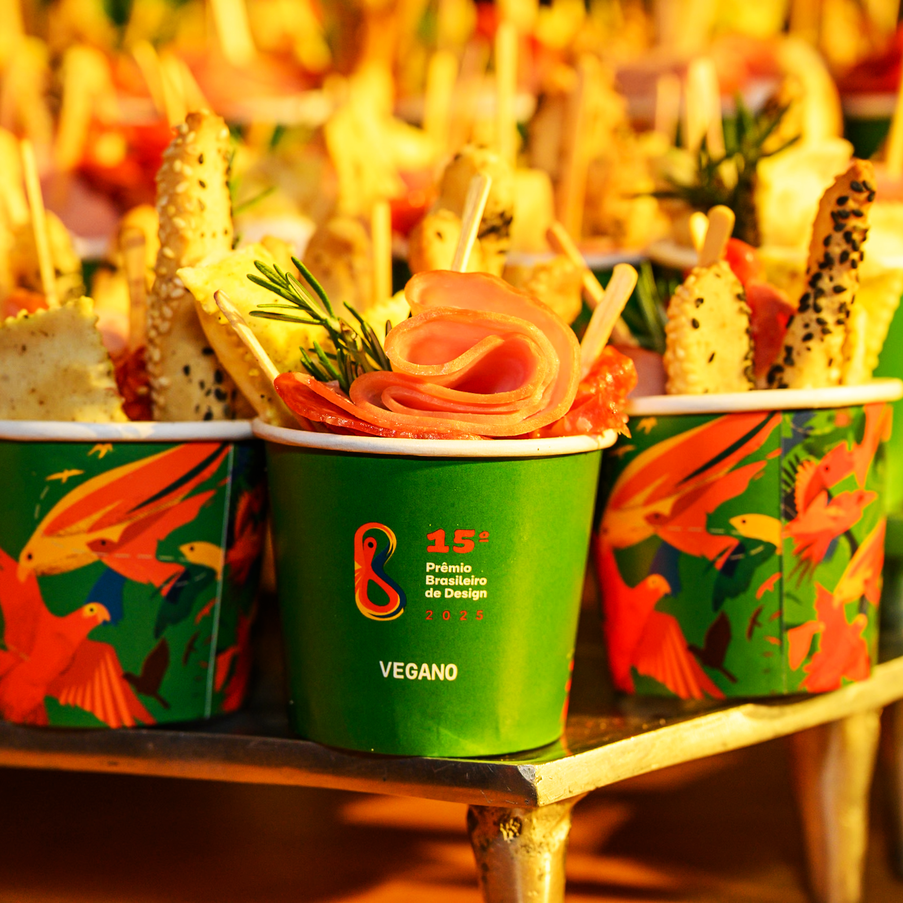
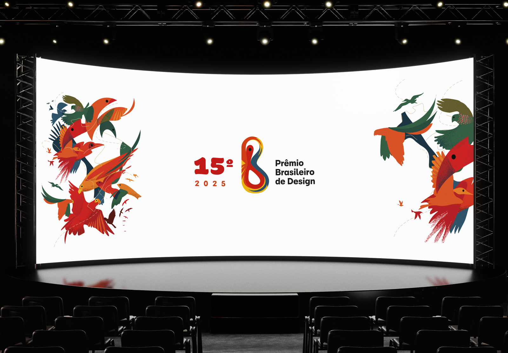
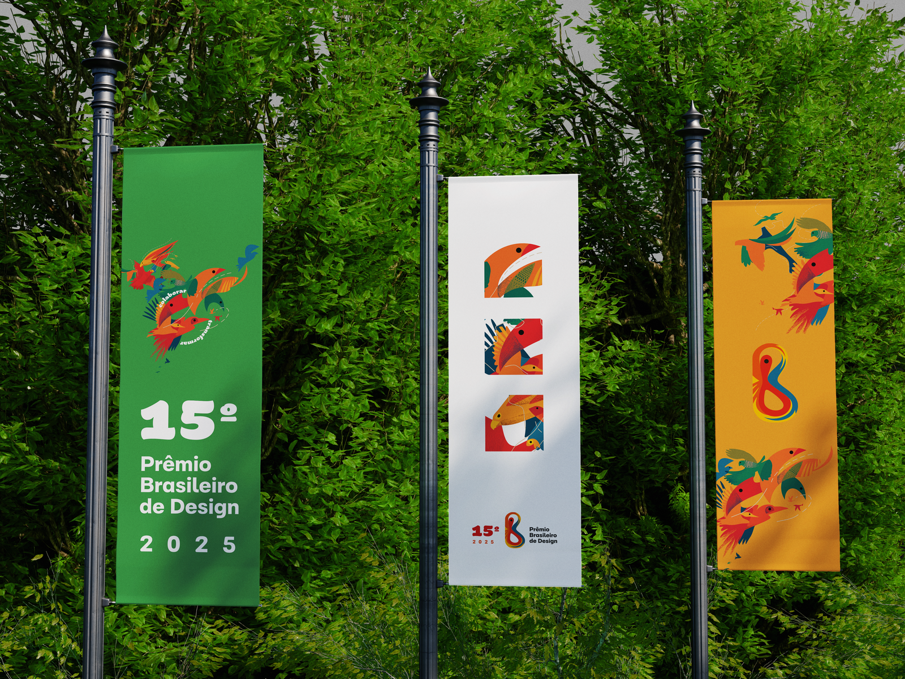
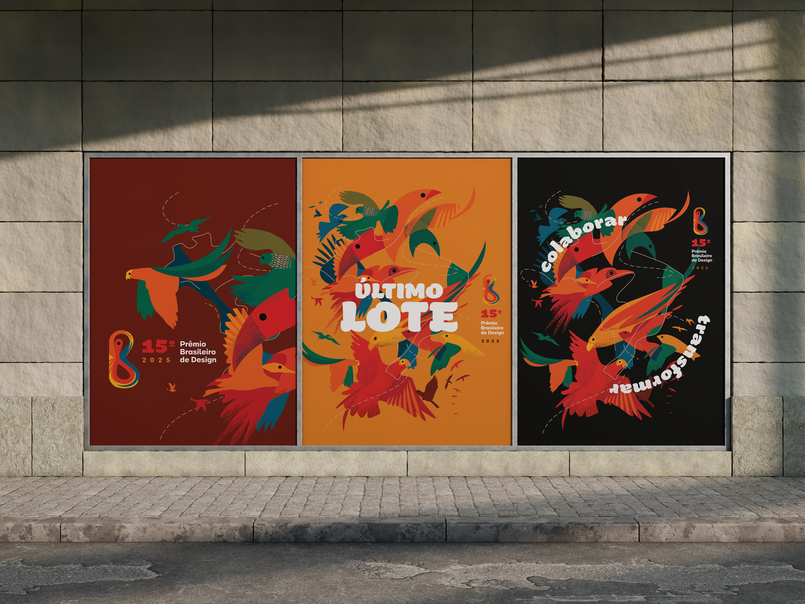
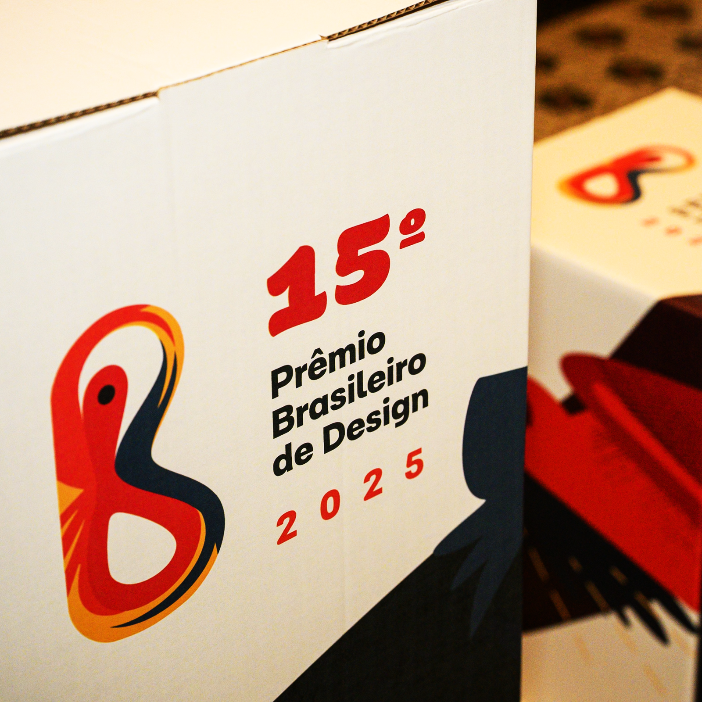
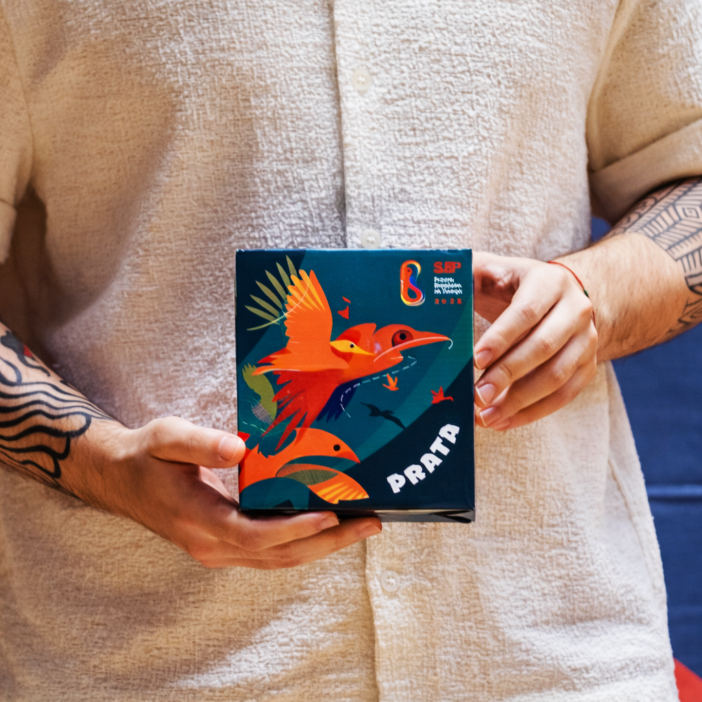
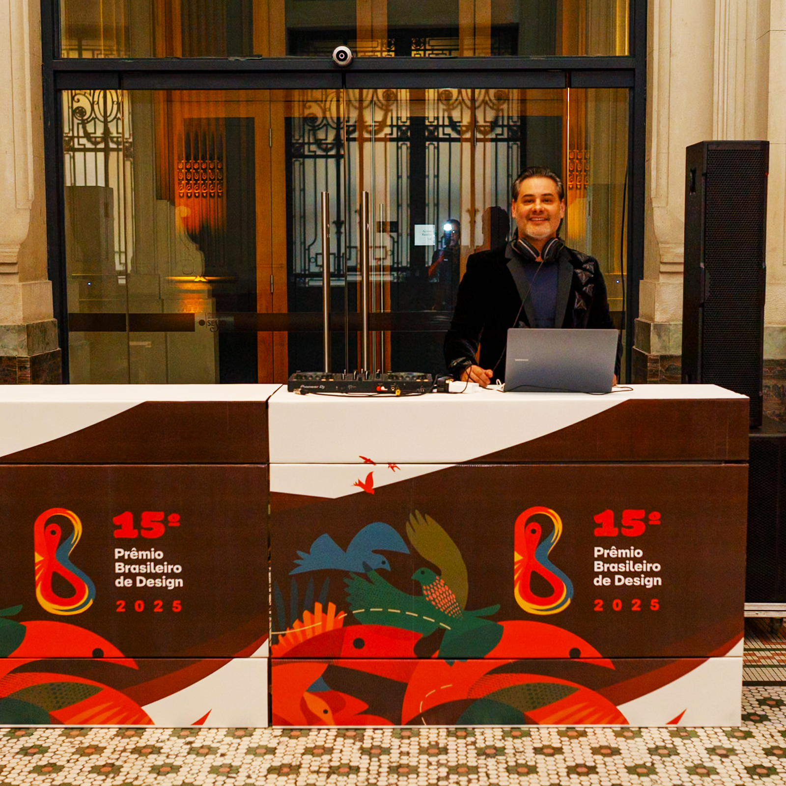

amazônia em outro olhar
produção audiovisual
estratégia & conteúdo
cinematografia
direção artística
eventos & festivais
documentários
amazônia em outro olhar
produção audiovisual
estratégia & conteúdo
cinematografia
direção artística
eventos & festivais
documentários
amazônia em outro olhar
produção audiovisual
estratégia & conteúdo
cinematografia
direção artística
eventos & festivais
documentários
Case Study • Identidade Visual • 15ª Edição
BDA — Prêmio Brasileiro de Design
Construção da identidade visual e narrativa para o Oscar do design brasileiro: conectando biomas e territórios sob o conceito vivo de ‘Colaborar e Transformar’.

Cenografia do palco principal: sistema visual modular exibido em painel de LED panorâmico
BDA 2025 • Abedesign
Conceito estratégico desenvolvido em parceria com a liderança da Abedesign para a 15ª edição comemorativa.
O design entendido como organismo vivo: conectando ecossistemas, pessoas e biomas em movimento contínuo.
O design entendido como um organismo vivo e instrumento social
“Entendemos que o momento que a humanidade atravessa requer muita inteligência social e trabalho em comunidade para que se atinja às transformações necessárias para uma vida melhor.”
Em 2025 tivemos a honra de ser convidados para construir a identidade visual do Prêmio Brasileiro de Design (BDA 2025), considerado o verdadeiro Oscar do design nacional. Promovido pela Associação Brasileira das Empresas de Design, o prêmio chegou à sua 15ª edição celebrando a maturidade, a inventividade e o impacto socioambiental da disciplina em todo o território brasileiro.
O ponto de partida foi o conceito ‘Colaborar e Transformar’. Antes mesmo de abrir qualquer software de vetorização ou composição, atuamos lado a lado com a liderança da Abedesign para amadurecer e aprofundar esse propósito. Traduzimos a premissa de que a excelência do design reside na sua capacidade de dialogar, conectar e transformar realidades humanas em comunidade.
15ª
Edição comemorativa do maior prêmio de design do Brasil
27
Estados e regiões integrados em uma rede criativa viva
100%
Metodologia participativa e tipografia autoral brasileira
02 / Estratégia & Metodologia
Como conectar todas as vozes do Brasil em uma só linguagem viva?
O desafio foi chegar a um caminho visual autêntico que representasse o conceito criado e se conectasse profundamente com o público de todas as regiões do Brasil — de grandes metrópoles a pequenos estúdios regionais — sem cair em clichês ou regionalismos rasos.
Para isso, utilizamos nossa metodologia participativa chamada Fórum Criativo. Nela, desenvolvemos uma extensa nuvem semântica a partir das palavras-chave do conceito e, a partir delas, mapeamos convergências de fauna, cartografia e saberes populares.
Durante essa imersão, emergiu a grande virada de perspectiva: tudo o que se transforma está vivo, e colaborar é interagir em comunidade. Essa descoberta se transformou no norte irrefutável que nos levou ao conceito visual dos pássaros migratórios.
01.
Nuvem Semântica
02.
Mapeamento de Biomas
03.
Metáfora dos Pássaros

Aplicação territorial em sinalização e bandeiras têxteis
Fórum Criativo
03 / Conceito Visual & Tipografia
Pássaros migratórios: o voo como linguagem gráfica.
Na metáfora dos pássaros migratórios, “colaborar” se traduz em deslocamento contínuo, rede e encontro fecundo entre territórios. Cada ave representada simboliza uma região do Brasil e carrega, em sua trajetória e traço geométrico, a ideia de transformação por movimento: atravessar paisagens, conectar ecossistemas e fertilizar novos contextos. O voo se torna linguagem gráfica, e o design, um organismo em migração criativa.
Para a sustentação tipográfica, adotamos fontes da renomada foundry brasileira Plau. A união entre formas geométricas precisas e tipografia nacional de alto rigor trouxe uma brasilidade calorosa, contemporânea e inconfundível, conferindo peso institucional e frescor artístico ao projeto.

Artefatos & Premiação
Do universo digital às esculturas físicas: um sistema gráfico rico e flexível desdobrado em múltiplos suportes táteis, troféus tridimensionais, medalhas de honra e ambientação cenográfica.



Conexão • Criatividade • Resultado
Tem um projeto ou desafio semelhante?
Da concepção de identidade e narrativa territorial à produção cinematográfica e experiências de marca, vamos construir a próxima grande história da sua organização.